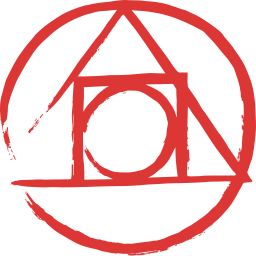

Open Source Projects
2017
polymer-redux
Implementing Redux with Polymer.afonsopacifer.github.io
My personal website.


2017-goals
My Goals for 2017 :)learn-english-every-single-day
A challenge to improve my English while studying CSS and Polymer.2016
scrollindo.js
Simple abstraction for scroll interactions.n64-3d
Nintendo 64 3D logo made with Three.JS <3slush-banana
Generator for BananaCSS Projects.slush-gulp-plugin
A slush generator for gulp plugins.gulp-banana
Gulp plugin for compile Banana code to CSS.css-ast-iterations
Provide a very simple API for complex iterations on the CSS abstract syntax tree (AST).banana-style-guide
Banana NodeJS code style guide.bananacss
The brazilian CSS superset writen in NodeJS.vue-meditation
Timer for meditation built with Vue.JS
slush-node-cli
A slush generator for Nodejs CLI programs.friday
Shell Script to help with daily tasks.awesome-firebase
A curated list of Firebase.skip-to-content
A Polymer element for Skip to Content.hamburguer-menu
A Polymer element for Off-canvas Menu.github-corner
A Polymer element for Github Corner.react-unit-test-example
Exemplo de teste unitário em componentes ReactJS.

slush-react-start
Generator for React + ES5 (Browserify) or ES6 (Webpack/Babel).react-pomodoro
Pomodoro timer for developers.react-comments
A React comment feed.da-vinci-css
Creating shapes and drawings with CSS.css-magic
An illusion created only with CSS.egg-emergency
A remake of the most fun mini game that existed in Pokemon Stadium with only CSS.2015
open-source-boilerplate
A template to help you create open source projects more organized.SPA-example
Exemplo de uma SPA utilizando Jquery e History API.pacificator
Adds a standard syntax and indentation to css.microscope
A simple and fast boilerplate that assists the development of Atomic Design Systems.slush-tangerine
Front-End boilerplate with tangerine flavor.
open-source-checklist
A guide to help you remember important things when creating an open source project ;Dbusca-starter-kit
Front-End Boilerplate :)write-code-every-day
A project to honor those developers who believed in the challenge.commit-wars
Minhas aventuras pelo mundo Open Source na jornada Write Code Every Day.learning-css-grid-layout
List of resources to learn CSS Grid Layout Module or only CSS Grid.front-end-checklist
work in progress.flex-grid-framework
The Flex Semantic Grid focusing on performance.
dev-notes
Anotações de um Dev Front-End.pumpkin
A halloween theme, inspired on Github Halloween Themed Contribution Graph.awesome-flexbox
A curated list of CSS Flexible Box Layout Module or only Flexbox.my-personal-website
My personal website.